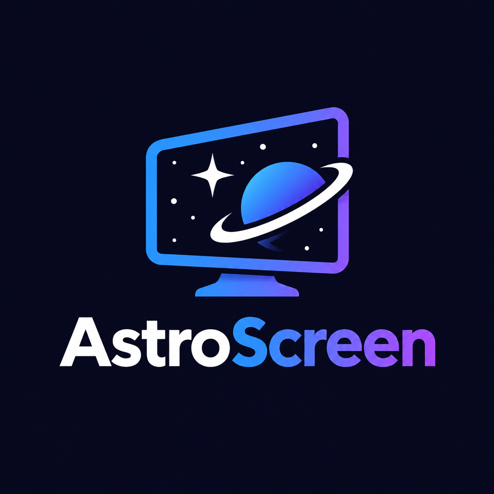

AstroScreen
por AstroSoftware
Capturar
Biblioteca
Soporte en Discord
🚀
¡Nueva versión disponible:
!
Actualizar
✕
Elige una pantalla o ventana para empezar.
00:00
Captura
Copiar
Pausa
Calidad
Ligera
Equilibrada
Máxima
FPS
15
30
60
Cuenta atrás
Sin
3 s
5 s
Micrófono
Audio del sistema
Tus capturas y grabaciones
Abrir carpeta